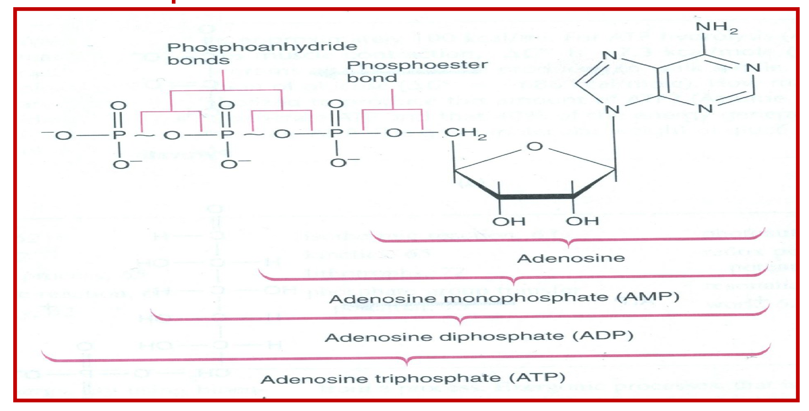
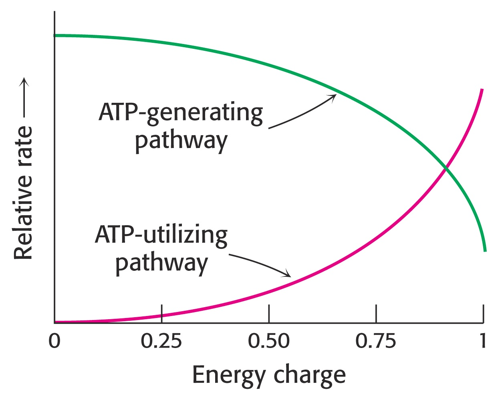
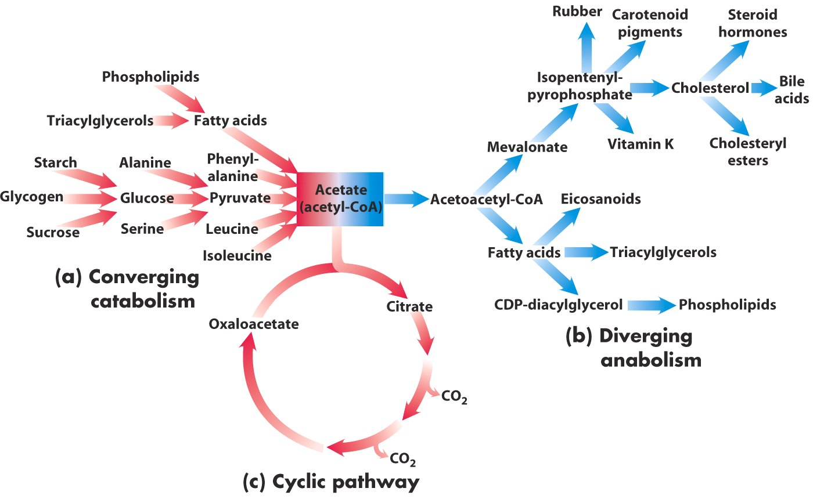
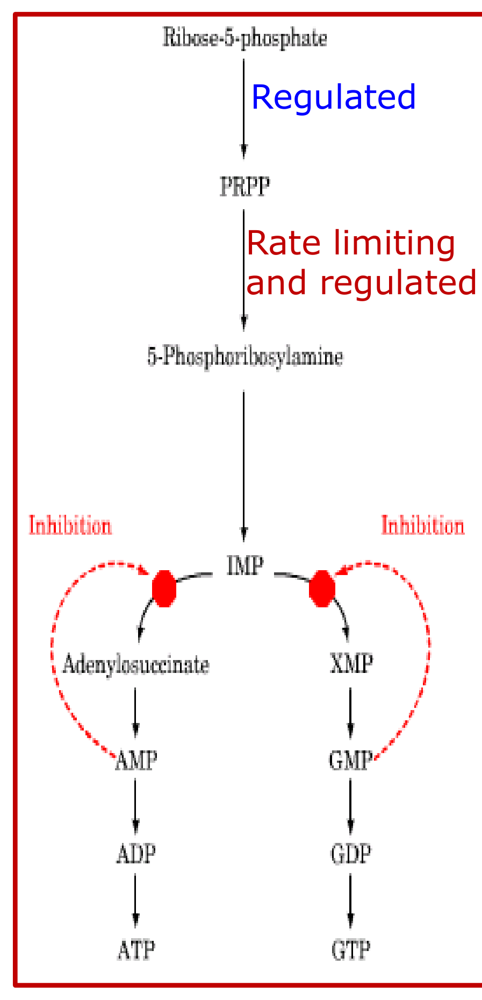
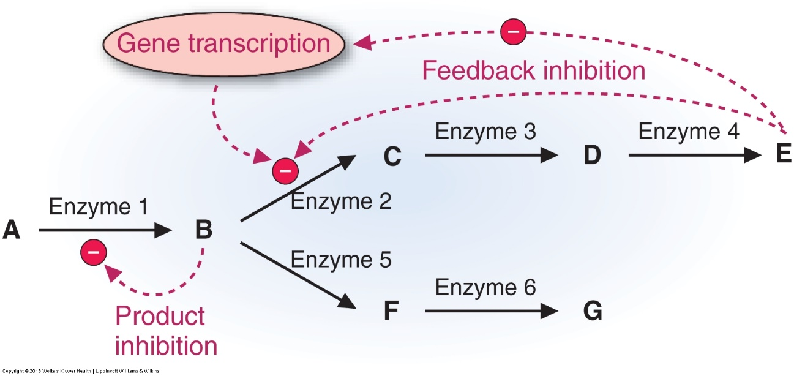
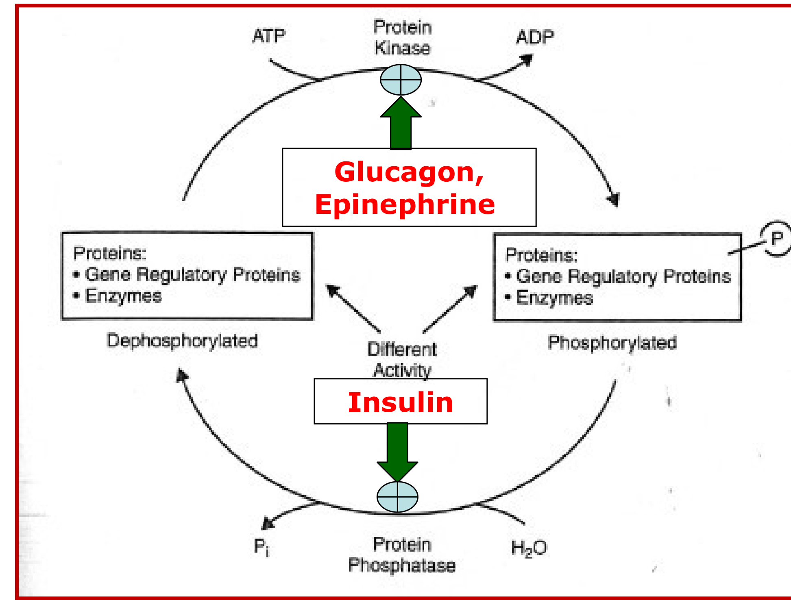
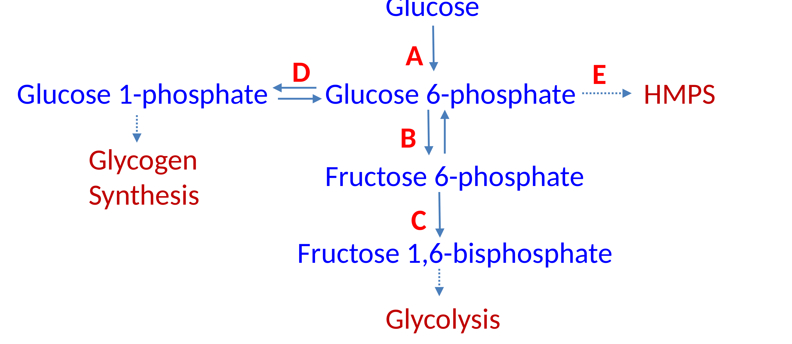

Macronutrients cannot be used as eaten. They are digested to their simplest absorbable forms — glucose, fatty acids, amino acids — absorbed, and taken up by cells. There catabolism oxidizes them, stripping hydrogens off rather than adding oxygen. NAD+, NADP+ and FAD catch those hydrogens. The electron transport chain cashes NADH and FADH2 in for ATP; NADPH is spent on building instead. When ATP is plentiful the cell flips to anabolism, which needs the three things catabolism just made — energy, carbon and hydrogen — plus the hormonal signal that the fed state has arrived.
Cellular reactions rarely occur in isolation. They are organized into multi-step sequences called pathways, in which the product of one enzyme is the substrate of the next. Pathways intersect, so carbohydrate, lipid and protein metabolism are not three separate subjects but one integrated network sharing intermediates. Every pathway is either degradative (catabolic) or synthetic (anabolic); a pathway that regenerates its own starting component is a cycle.
Catabolism breaks complex molecules down to a few simple end products — CO2, H2O and NH3. It is convergent: many dietary molecules funnel into a handful of common intermediates. It is exergonic, releasing free energy stepwise rather than all at once and banking it as ATP. And it is oxidative, so it consumes oxidized coenzymes.
Degradation releases energy in three stages. Stage 1 hydrolyzes complex molecules into their building blocks: proteins to amino acids, polysaccharides to monosaccharides, triacylglycerols to free fatty acids and glycerol. Stage 2 degrades those building blocks to acetyl-CoA and a few other simple molecules, capturing a small amount of ATP. Stage 3 oxidizes acetyl-CoA in the TCA cycle, generating most of the ATP as electrons flow from NADH and FADH2 to oxygen. Ethanol enters at acetyl-CoA: alcohol supplies real calories, not empty ones.
Every hydrogen removed must be accepted by a carrier, and which of the three coenzymes accepts it decides what the cell can do with the electrons afterwards. A reducing equivalent is the electron-plus-proton package being moved; NAD+ takes it as a hydride (two electrons, one proton), releasing the second proton free: NAD+ + 2H → NADH + H+.
| Pathway | Substrates handled | Yields | Note |
|---|---|---|---|
| Glycolysis | Mainly carbohydrate | ATP; carbon skeletons; feeds acetyl-CoA | Most glucose goes this way |
| TCA cycle = citric acid cycle = tricarboxylic acid cycle | Carbohydrate, lipid and protein — all converge here | CO2 + H2O, NADH, FADH2 → ATP | Starting molecule is acetyl-CoA; many amino acids also enter at other points as their carbon skeletons |
| HMP shunt = pentose phosphate pathway | A minority of glucose | NADPH + pentoses — no ATP | The alternate oxidative route; its oxidative phase is irreversible, its non-oxidative phase is reversible sugar interconversion |
| NADH (from NAD+)The pool is kept oxidized, ready to accept electrons from catabolism and hand them to the electron transport chain. Indirect source of ATP. FADH2 does the same job but is produced in smaller quantity. | NADPH (from NADP+)The pool is kept reduced, ready to donate electrons into biosynthesis. Never a source of ATP — it is the hydrogen donor for reductive synthesis. |
The two differ by a single phosphate on the 2′-OH of the adenosine ribose. Chemically they transfer the same two electrons; the phosphate is a tag that lets enzymes tell the pools apart, so the cell can run them at opposite redox poise for opposite purposes.
Anabolism assembles complex products from a few simple precursors, so it is divergent — the mirror image of catabolism's convergence. It is endergonic and must be paid for. Most of its reactions are reductive syntheses — syntheses that consume hydrogen — and that hydrogen comes from NADPH.
| Requirement | Supplies | Detail |
|---|---|---|
| ATP (or GTP) | Energy | The universal requirement. Ligases use ATP — glutamine synthesis by glutamate-ammonia ligase; PEP carboxykinase uses GTP |
| Acetyl-CoA | Carbon skeleton | Two-carbon acetyl unit; the carbon source for fatty acid and cholesterol synthesis |
| NADPH | Hydrogen | Reducing power for reductive synthesis (NADH serves in a few reactions) |
| ↑ Insulin | The signal | The major anabolic hormone; induces the key enzymes of anabolic pathways |
A high-energy bond is a covalent bond whose hydrolysis releases a useful amount of energy to do work, conventionally drawn with a squiggle (~). ATP is the cell's most commonly used high-energy compound, and its energy is defined by the hydrolysis reaction.

The cell's overall energy status is summarized by the energy charge, which runs from 0 (all AMP) to 1 (all ATP). Like intracellular pH, it is buffered, and most cells hold it between 0.8 and 0.95. Because catabolism generates ATP and anabolism spends it, energy charge is the switch that decides which direction runs.

| ExergonicReleases free energy; proceeds spontaneously. Catabolism. | EndergonicConsumes free energy; must be coupled to ATP hydrolysis. Anabolism. |
| ConvergentMany substrates → few end products. Catabolism. | DivergentFew precursors → many products. Anabolism. |

Carbohydrate is the preferred fuel, lipid the concentrated fuel, and protein primarily supplies building blocks though it can also be burned for energy. Both carbohydrate and fat converge on acetyl-CoA and yield ATP; what differs is the hormonal state in which each is burned: carbohydrate in the fed, high-insulin state, fat in the low-insulin state.
| Catabolism | Anabolism | |
|---|---|---|
| Direction | Breaks something down | Builds something up |
| Shape | Convergent | Divergent |
| End products | Simple molecules (CO2, H2O, NH3) | Complex molecules (proteins, polysaccharides, lipids, nucleic acids) |
| Starting material | Energy-containing nutrients: carbohydrate, fat, protein | Precursors: amino acids, sugars, fatty acids, nitrogenous bases |
| Thermodynamics | Exergonic — releases energy | Endergonic — requires energy |
| Redox | Oxidative; consumes NAD+, NADP+, FAD | Reductive; consumes NADPH |
| Energy charge | Stimulated by low energy charge | Stimulated by high energy charge |
Nothing can be catabolized without nutrients, and macronutrients alone are not enough. Micronutrients — vitamins and minerals — become the coenzymes and cofactors that the enzymes handling carbohydrate, lipid and protein depend on. Most foods deliver a mixture of both, along with toxins and xenobiotics the cell must detoxify and excrete.
Whether a nutrient must be eaten daily depends on whether the body can stockpile it.
| Stored in the body | Not stored — required on a regular, almost daily basis |
|---|---|
| Carbohydrate as glycogen Fat as triacylglycerols Amino acids in muscle protein and the free amino acid pool Fat-soluble vitamins Some minerals (e.g. iron) | Water-soluble vitamins — which is precisely why deficiency of a water-soluble vitamin shows up as a metabolic disease. Since most activated carriers are coenzymes derived from water-soluble vitamins, a deficiency disables a whole class of reactions at once. |
Ill health follows from too little of a nutrient — beriberi (thiamine), pellagra (niacin), protein-energy malnutrition — or from too much, as with alcohol. Some essential nutrients are toxic or deadly in excess, including water, salt and iron.
Very few reactions in an organism proceed without catalysis, so a metabolic pathway is in practice a multi-step, enzyme-catalyzed sequence. Enzymes are largely protein, and each converts substrate to product at a defined rate per unit time. The same six chemical operations recur across all of metabolism.
| Type | What happens |
|---|---|
| Oxidation–reduction | Electron transfer |
| Ligation requiring ATP cleavage | Formation of covalent bonds, e.g. carbon–carbon bonds |
| Isomerization | Rearrangement of atoms to form isomers |
| Group transfer | Transfer of a functional group from one molecule to another |
| Hydrolytic | Cleavage of bonds by the addition of water |
| Addition or removal of functional groups | Addition of functional groups to double bonds, or their removal to form double bonds |
An activated carrier is a coenzyme that holds a chemical group or a pair of electrons in an activated form and shuttles it between reactions. Learning metabolism is largely a matter of knowing which carrier moves which group, and which vitamin it is built from.
| Carrier in activated form | Group carried | Vitamin precursor |
|---|---|---|
| ATP | Phosphoryl | — |
| NADH and NADPH | Electrons | Niacin (nicotinate) |
| FADH2 | Electrons | Riboflavin (B2) |
| FMNH2 | Electrons | Riboflavin (B2) |
| Coenzyme A | Acyl | Pantothenate (B5) |
| Lipoamide | Acyl | Lipoic acid |
| Thiamine pyrophosphate (TPP) | Aldehyde | Thiamine (B1) |
| Biotin | CO2 | Biotin |
| Tetrahydrofolate (THF) | One-carbon units | Folate |
| S-Adenosylmethionine (SAM) | Methyl | — |
| Uridine diphosphate glucose (UDP-glucose) | Glucose — used for glycogen synthesis | — |
| Cytidine diphosphate diacylglycerol | Phosphatidate | — |
| Nucleoside triphosphates | Nucleotides | — |
Five features recur in every pathway you will meet: irreversibility · committed step · rate-limiting step · regulation · compartmentalization. The first three are structural properties of the pathway; the last two are how the cell exploits them.
Irreversible steps exist so that opposing pathways can be separated. If the anabolic and catabolic routes between two compounds used an identical reaction sequence, running both at once would be wasteful, and the cell could not regulate them independently. Fatty acid synthesis and fatty acid oxidation are the standing example: they must not run simultaneously or fat metabolism becomes futile.
An irreversible step has a large negative ΔG under physiological conditions, making it one-way, and it is the bottleneck of the pathway — block it and flux downstream falls. That is why the cell regulates these steps. Slowing is not stopping: no pathway is ever fully shut down; one runs while its opposite is damped.
| Committed stepThe first irreversible reaction, early in the pathway, that commits its product to continue down that pathway and no other. Generally the target of regulation. Found only in linear pathways. |
Rate-limiting stepThe slowest reaction in the pathway, generally with the highest activation energy. Its velocity sets the overall flux of metabolites. Subject to intense regulation, both positive and negative. Present in every pathway, cyclic ones included. |
Both are irreversible, and in many pathways — though not all — the committed step is also the rate-limiting step. What distinguishes them is why each matters: the committed step for its position at a branch point, the rate-limiting step for its speed. Two separate quantities are at work — the highest activation energy makes it slowest, a large negative ΔG makes it irreversible.

Enzyme activity is regulated by activation or inhibition, so that the flux through each pathway matches what the body currently needs. Regulation is aimed principally at the enzymes catalyzing irreversible steps — the committed and rate-limiting ones — but other steps are regulated too. Mechanisms sort into three groups by what they change and how fast.
| Group | Changes | Time course | Mechanisms |
|---|---|---|---|
| Long-term | Enzyme quantity | Hours to days | Induction · repression · degradation |
| Short-term | Enzyme activity | Minutes to hours | Substrate concentration · product inhibition · proenzyme activation · reversible covalent modification · allosteric regulation |
| Compartmentalization | Enzyme location | Structural | Segregation into organelles, multienzyme complexes, or separate tissues |
Regulating gene expression controls both the quantity of an enzyme and the rate at which it is made. Because it works at the level of transcription it is slow — hours to days — and it suits enzymes needed at a particular stage rather than those in constant use. Degradation lowers enzyme quantity by two routes: the ubiquitin–proteasome pathway and the lysosomal pathway.
| InductionIncreases the rate of enzyme synthesis by enhancing gene transcription → more enzyme protein. Insulin induces the key enzymes of anabolic pathways. | RepressionDecreases the rate of enzyme synthesis by decreasing gene transcription → less enzyme protein. |
Short-term mechanisms carry out most of the moment-to-moment physiological control of metabolism. They act on enzyme molecules that already exist, so they usually leave the concentration of enzyme protein unchanged, and they are reversible and rapid. Proenzyme activation is the one exception on both counts, and that exception is examinable.
The velocity of every enzyme depends on the concentration of its substrate, so an enzyme with a high Km is effectively controlled by how much substrate is around. The liver is the chief site of metabolism; after a meal, glucose transporters carry glucose into hepatocytes, where glucokinase phosphorylates it in bulk to glucose-6-phosphate for glycogen synthesis. Phosphorylation is the point of no return — a charged phosphate traps the sugar inside the cell and commits it to further metabolism.
Once enough immediate product has accumulated, it signals its own enzyme to slow down. Peripheral tissues run hexokinase, whose low Km lets it phosphorylate glucose efficiently even during fasting; what restrains it is accumulation of its product, glucose-6-phosphate. The two kinases together illustrate that different key enzymes are governed by different mechanisms.
| HexokinasePeripheral tissues · low Km · works during fasting · inhibited by glucose-6-phosphate · not substrate-regulated | GlucokinaseLiver · high Km · works only after a meal · not inhibited by glucose-6-phosphate · regulated by substrate concentration; induced by insulin |
Glucokinase is inactive during fasting and activated after a meal (strictly, it is never switched off — its high Km holds it far below Vmax at fasting glucose concentrations).
| Product inhibitionInhibition by the immediate product of that same enzyme. | Feedback inhibitionInhibition by the final product of the pathway, acting on an enzyme further back. |

Some enzymes are synthesized as inactive precursors called proenzymes or zymogens, made in abundance, stored in secretory granules, and activated by proteolytic cleavage only once they reach their site of action. Pancreatic proteases work this way, as do the blood clotting factors, where each factor is activated by the previous one in the cascade. Activation is fast, which makes it a good emergency mechanism, but cleaving a peptide bond cannot be undone.
Pancreatic proteases must stay inactive inside the acinar cell. If trypsinogen is converted to trypsin within the cell — sporadically, or through an inherited defect — the active protease digests the cell that made it. The result is acinar autolysis and acute pancreatitis.
Attaching a group to an enzyme changes its activity rapidly and transiently. Phosphoryl is much the most important; methyl, uridyl, adenylyl and ADP-ribosyl groups are also used. A protein kinase transfers phosphate from ATP onto the hydroxyl group of a serine, threonine or tyrosine residue, and a phosphoprotein phosphatase hydrolytically removes it, releasing Pi. Whether the phosphorylated form is the active or the inactive one depends on the enzyme.
What makes this the master switch of intermediary metabolism is that it is all-or-none and hormonally driven. At any point in the fed–fasting cycle, all target proteins are phosphorylated or all are dephosphorylated, so entire opposing pathways switch on and off together.
It follows that any pathway insulin supports is active in the dephosphorylated form. Glucagon and epinephrine are the counter-regulatory hormones opposing insulin, and between them these hormones control most of intermediary metabolism. Underneath sits the adenylyl cyclase cascade: glucagon or epinephrine binds a G protein–coupled receptor, the Gα–GTP complex activates adenylyl cyclase, which converts ATP to cAMP; cAMP binds the two regulatory subunits of protein kinase A, releasing its catalytic subunits to phosphorylate targets on serine and threonine. Insulin opposes this cascade, leaving phosphatase activity dominant.

An allosteric modifier binds a site other than the active site and changes the enzyme's activity within minutes. Allosteric activators raise activity, allosteric inhibitors lower it. This is how metabolite levels themselves report back to the regulated enzymes of a pathway.
Separating enzymes in space is regulation by architecture, and it operates at two levels.
| Level | Purpose | Example |
|---|---|---|
| Cellular | Segregate opposing catabolic and anabolic pathways within one cell; enzymes may be cytosolic, mitochondrial, or both, or bundled into multienzyme complexes | Fatty acid oxidation in mitochondria; fatty acid synthesis in cytoplasm |
| Tissue | Carry out organ-specific processes; also makes enzyme or product levels usable as a clinical indicator of tissue damage | Urea synthesis in the liver; steroid hormone synthesis in the adrenals |
The urea cycle operates in the liver, and urea is measured as blood urea nitrogen (BUN). A low BUN therefore points to liver damage — from alcohol, toxins or other hepatic injury — because a damaged liver cannot make urea.
| Event | Time |
|---|---|
| Substrate stimulation | Minutes |
| Product inhibition | Minutes |
| Allosteric regulation | Minutes |
| Covalent modification | Minutes – hours |
| Synthesis or degradation | Hours – days |
The rule behind the table: a mechanism that touches an existing enzyme acts in minutes; a mechanism that has to go through the gene takes hours to days.
Cover the answers. Say each one out loud before you look — the goal is recall, not recognition.

Bold = highest-yield. If you review one page, review this one.
Catabolism: convergent · complex→simple · exergonic · oxidative · releases energy → ATP · triggered by LOW energy charge
Anabolism: divergent · simple→complex · endergonic · reductive · spends ATP · triggered by HIGH energy charge — never a low one · insulin
= LOSS OF HYDROGEN, not gain of oxygen (dehydrogenation)
NAD+ → NADH + H+ · NADP+ → NADPH · FAD → FADH2
NADH and FADH2 → ATP (indirectly, via the ETC). NADPH → NEVER ATP — it is the H donor for reductive synthesis
① complex molecules → building blocks ② building blocks → acetyl-CoA (a little ATP) ③ acetyl-CoA oxidized in TCA → most of the ATP
Glycolysis — mainly carbohydrate → acetyl-CoA
TCA cycle — common to carbohydrate + lipid + protein; starts at acetyl-CoA → CO2 + H2O, NADH, FADH2
HMP shunt — alternate; NADPH + pentoses, NO ATP
① ATP (universal; sometimes GTP) ② acetyl-CoA = carbon ③ NADPH = hydrogen ④ ↑ insulin
Insulin supports every "-genesis" EXCEPT gluconeogenesis and ketogenesis
ATP = 2 high-energy phosphoanhydride bonds (β, γ); ADP = 1; AMP = 0; ΔG°′ = −7.3 kcal/mol each
α-to-ribose = phosphoester, not high energy
EC range 0–1; buffered at 0.8–0.95; high EC → catabolism ↓, anabolism ↑
ATP → phosphoryl
NADH / NADPH → electrons — niacin
FADH2, FMNH2 → electrons — riboflavin
Coenzyme A → acyl — pantothenate
Lipoamide → acyl — lipoic acid
TPP → aldehyde — thiamine
Biotin → CO2 — biotin
THF → one-carbon — folate
SAM → methyl · UDP-glucose → glucose
CDP-diacylglycerol → phosphatidate · NTPs → nucleotides
Most are coenzymes from water-soluble vitamins — the ones the body does not store.
Oxidation–reduction · ATP-driven ligation · isomerization · group transfer · hydrolysis · addition/removal of functional groups
Irreversibility · committed step · rate-limiting step · regulation · compartmentalization
A pathway may have more than one irreversible step, and steps other than the committed / rate-limiting ones can also be regulated.
Committed: irreversible · early · linear pathways only · target of regulation · absent from cycles
Rate-limiting: irreversible · slowest · highest Ea · sets overall flux · intensely regulated
Rate-limiting ⟹ regulated. Regulated ⇏ rate-limiting.
Irreversibility comes from large negative ΔG; slowness from high Ea
No pathway is ever fully shut down — one is active while the opposing one slows
LONG = enzyme QUANTITY · gene level · hours–days · induction / repression / degradation (ubiquitin-proteasome, lysosomal)
SHORT = enzyme ACTIVITY · minutes–hours · reversible & rapid
COMPARTMENTALIZATION = enzyme LOCATION · structural
① substrate concentration — glucokinase
② product inhibition — hexokinase ← G6P
③ proenzyme activation — NOT reversible; raises enzyme amount
④ reversible covalent modification — Ser / Thr / Tyr −OH
⑤ allosteric regulation — activators / inhibitors
Product inhibition = immediate product. Feedback inhibition = final product.
HK: peripheral · low Km · works in fasting · inhibited by G6P
GK: liver · high Km · only after a meal · NOT inhibited by G6P · induced by insulin
Insulin → always DEphosphorylates (phosphatase, H2O → Pi)
Glucagon / epinephrine → always PHOSPHORYLATE (kinase, uses ATP) — the counter-regulatory hormones
Route: GPCR → Gα–GTP → adenylyl cyclase → cAMP → PKA → Ser/Thr
At any moment ALL targets are phosphorylated OR ALL dephosphorylated
Insulin-driven pathways are active dephosphorylated.
Cellular: FA oxidation = mitochondria; FA synthesis = cytoplasm; also multienzyme complexes
Tissue: urea = liver; steroid hormones = adrenals
Clinical: low BUN → possible liver damage
Substrate stimulation · product inhibition · allosteric — minutes
Covalent modification — minutes–hours
Synthesis / degradation — hours–days
Touches an existing enzyme → minutes. Goes through the gene → hours–days.
Acute pancreatitis — intracellular trypsinogen activation → acinar autolysis; can be inherited
Low BUN — liver damage (urea cycle is hepatic)
Beriberi — thiamine · Pellagra — niacin · PEM — protein-energy malnutrition
Toxic in excess: alcohol, water, salt, iron